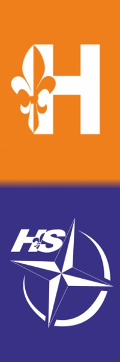

79 Wodna Warszawska Drużyna Harcerska ALPHA
O nas
Harcerskie ABC
Galeria
Do pobrania
Kontakt
Jesteśmy drużyną specjalnościową - skupiamy się na działalności wodnej. Nie lubimy spędzać zbiórek siedząc w miejscu, chcemy aby zawsze się coś działo. W lato pływamy na Zegrzu, jeździmy na spływy kajakowe i rejsy morskie. Zimą, gdy na dworze jest zimno, zaplatamy liny, szykujemy sprzęt do sezonu oraz dowiadujemy się wielu ciekawych rzeczy.
Naszym celem jest rozwijanie swoich pasji związanych z wodą które zapewniają nam wiele niezapomnianych chwil, nabywanie nowej wiedzy oraz poznawanie przyjaciół na całe życie.
Wszystkich chętnych którzy chcieliby wstąpić w nasze szeregi i są w wieku od 4 klasy szkoły podstawowej zapraszamy do skontaktowania się z druhem Michałem. Chcemy być środowiskiem wielopoziomowym - dlatego mamy miejsce zarówno dla tych młodszych, jak i dla starszych :)
